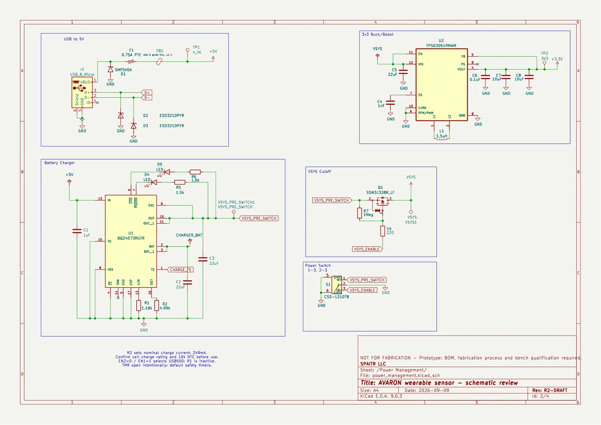

AVARON R2 sensor prototype
Revived motion-recording sensor hardware, alongside the earlier lacrosse hardware work.

The idea
Explore the complete path from physical motion to recoverable data: schematic and layout, battery/power protection, firmware acquisition, persistent storage and export. The current R2 is an engineering recorder for future AVARON integration, not proof of a finished athlete wearable.

How it works
Engineering workflow: inspect the KiCad project and review the power, MCU/sensors and battery sheets before considering fabrication. The current order hold must remain visible.
After the outstanding hardware checks and assembly, intended bring-up uses the documented debugger/power wiring and compiled firmware. No such board operation was performed here.
Firmware documentation describes recording motion into external flash, explicit start/stop/status controls, and stopped-session export through USB or encrypted BLE.
Host tools decode records and surface sequence/gap information. Explicit format/provisioning commands are separate engineering operations; they were not executed.
Inside the build
KiCad design and review
The project has a four-layer rectangular development board, hierarchical schematic sheets, custom symbols/footprints and review PDFs. Power-path, ESD, connector and pin-map issues are documented with corrections and remaining constraints.
C and Zephyr
Firmware separates IMU acquisition, fuel-gauge handling, flash storage/service, recording policy and telemetry. It targets an nRF52840 module and ICM-42688-P six-axis IMU.
Persistence and transport
Source/documentation describe a journal in external NOR flash plus BLE and USB export. Explicit statuses, recovery and data-gap checks matter as much as receiving samples.
Software verification
A focused host protocol suite checks signed raw axes, wire byte order, invalid frame sizes and bounded capture duration. Three tests passed during this research session; this does not validate hardware acquisition or radio behavior.
What I learned
Schematic correctness versus a working board
Source-supported learning topic: ERC/DRC and generated artifacts are useful gates but cannot substitute for powered validation, battery qualification or RF testing.
Power design is a system
Review findings connect charger, fuel gauge, protection, thermistor and USB host behavior. This supports a concrete electronics story about interfaces and failure paths rather than a claim of production readiness.
Design for data recovery
Recorder source and tests make queue ownership, byte order, timestamps, interrupted records and explicit erase behavior inspectable. These are documented technical topics, not an invented personal retrospective.